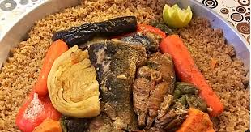

Acceuil
Recettes : tchaipe

Description
Le tchaïpe est un plat réconfortant à base de riz, de poulet et de légumes, cuit dans une marinade épicée et parfumée.
Sa saveur unique vient d'un mélange d'épices tchaïpe, qui offre une touche à la fois fumée, piquante et légèrement sucrée. C'est un plat complet, savoureux et très populaire dans les cuisines d'Afrique de l'Ouest.
voici une liste des ingredients necessaire a cette Recette :
- 1 poulet coupé en morceaux
- 1 oignon haché
- 2 gousses d'ail écrasées
- 1 cube d'assaisonnement (maggi, cube poulet)
- 1 c. à soupe de pâte d'ail-gingembre
- 1 c. à café de sel
- 1 c. à café de poivre noir
- 1 c. à café de piment en poudre (optionnel)
- 2 c. à soupe de piment fumé (paprika)
- 1 c. à soupe de gingembre en poudre
- 3 tasses de riz long grain
- 3 tomates mûres mixées ou 4 c. à soupe de concentré de tomate
- 2 carottes coupées en dés
- 1/2 tasse d'huile végétale
Les Etapes de cette Recette :
- Marinez le poulet : Dans un grand bol, mélangez les morceaux de poulet avec l'oignon haché, l'ail écrasé, la pâte d'ail-gingembre, le cube émietté, le sel, le poivre et le piment. Couvrez et laissez mariner au moins 30 minutes (idéalement 2h au réfrigérateur).
- Faites revenir le poulet : Dans une grande marmite ou un faitout, faites chauffer l'huile. Faites dorer les morceaux de poulet sur toutes les faces. Retirez-les et réservez.
- Préparez la base aromatique : Dans la même marmite, faites revenir brièvement les poivrons et les carottes. Ajoutez les tomates mixées (ou le concentré de tomate dilué dans un peu d'eau) et laissez cuire 5 minutes en remuant
- Incorporez les épices : Ajoutez le mélange d'épices tchaïpe (piment fumé, gingembre, ail, poivre de Guinée) dans la marmite et mélangez bien pour enrober les légumes. Laissez cuire 2 minutes pour que les épices dégagent toutes leurs saveurs.
- Réunissez les ingrédients : Remettez le poulet réservé dans la marmite. Ajoutez les haricots verts et versez de l'eau (ou du bouillon) à hauteur. Portez à ébullition, puis réduisez le feu et laissez mijoter à couvert pendant environ 20-25 minutes, jusqu'à ce que le poulet soit bien cuit.
- Lavez le riz : Pendant ce temps, lavez le riz à plusieurs eaux jusqu'à ce que l'eau devienne claire, puis égouttez-le.
- Cuisez le riz : Après la cuisson du poulet, goûtez et ajustez l'assaisonnement si nécessaire. Incorporez le riz égoutté et remuez délicatement pour l'enrober de sauce. Versez de l'eau chaude à raison du double du volume de riz (environ 6 tasses pour 3 tasses de riz).
- Laissez cuire à feu doux : Portez à ébullition, puis réduisez immédiatement le feu au minimum. Couvrez hermétiquement et laissez cuire pendant 20-25 minutes sans soulever le couvercle, jusqu'à ce que le riz ait absorbé tout le liquide.
- Laissez reposer : À la fin de la cuisson, éteignez le feu et laissez le riz reposer, toujours couvert, pendant 10 minutes.
- Servez : Égrenez le riz à la fourchette et servez chaud.